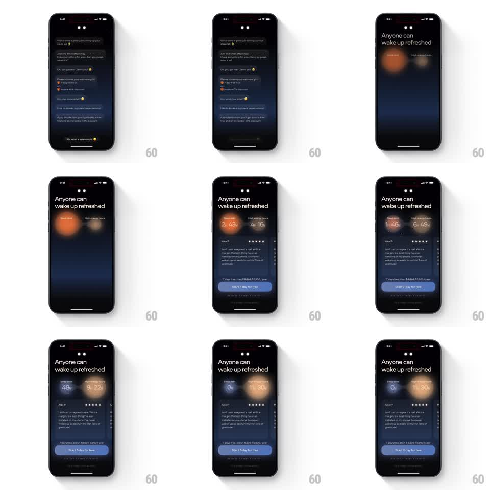

Media
Frame-by-frame

Rebuild this animation 1:1: Remy AI's sleep-debt-to-energy counter - two glowing orbs count in opposite directions, the sleep debt draining to zero while energy hours grow, over a testimonial and trial card.

Rebuild this animation 1:1: Remy AI's sleep-debt-to-energy counter - two glowing orbs count in opposite directions, the sleep debt draining to zero while energy hours grow, over a testimonial and trial card. ## Integration Integration: stack-agnostic spec - springs given as stiffness/damping, timed motions as duration + curve; map every value to your framework and animation library of choice. ## Scene A dark onboarding screen titled "Anyone can wake up refreshed". Two large soft-glow orbs sit side by side: a cool blue-purple "Sleep debt" orb and a warm orange "High energy hours" orb, each carrying a big hours value (starting 2h 43m and 4h 16m). Below, a review card (name, 5 stars, quote) and a trial card with "Start 7-day for free". ## Motion spec Pattern: dual counter orbs, ~2.5s. - The orbs breathe with a slow glow pulse (2s, opacity and blur radius oscillating subtly). - The two values count simultaneously in opposite directions (2s, ease-in-out): sleep debt drains 2h 43m to 0h, energy hours climb 4h 16m to 11h 30m. - As debt shrinks, the blue orb contracts and dims (scale 1 to 0.85, glow fading); as energy grows, the orange orb expands and brightens (scale 1 to 1.1, glow intensifying). - Labels and cards below are static; the orbs carry the story. ## Calibration - The counters tick in sync, not one after the other. - Orb size change is subtle - the numbers and glow do the work. ## Reduced motion Values swap without counting; orbs static. ## Don't miss - The blue orb is cool and dim, the orange orb warm and bright - the temperature contrast is the point. - Values roll digit by digit, not crossfade.